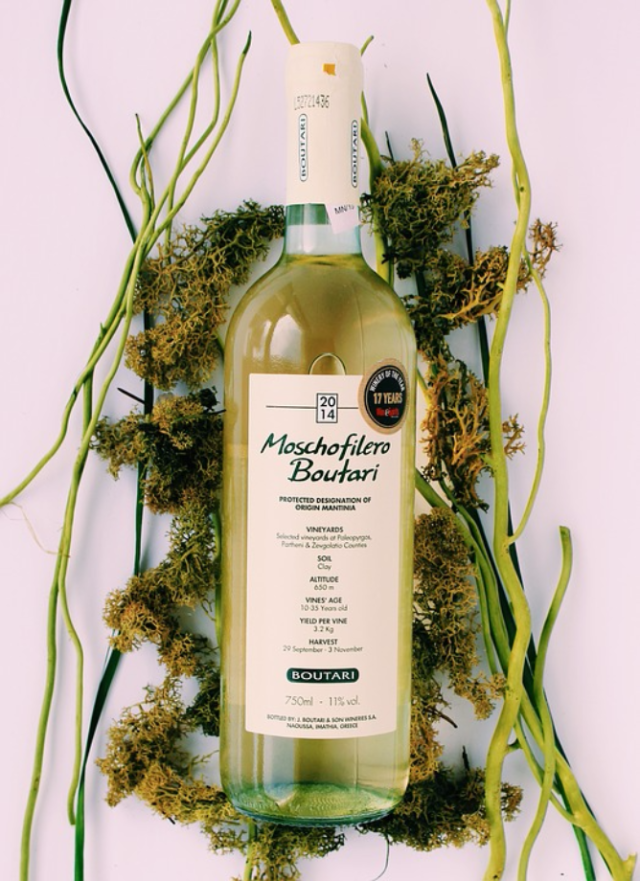
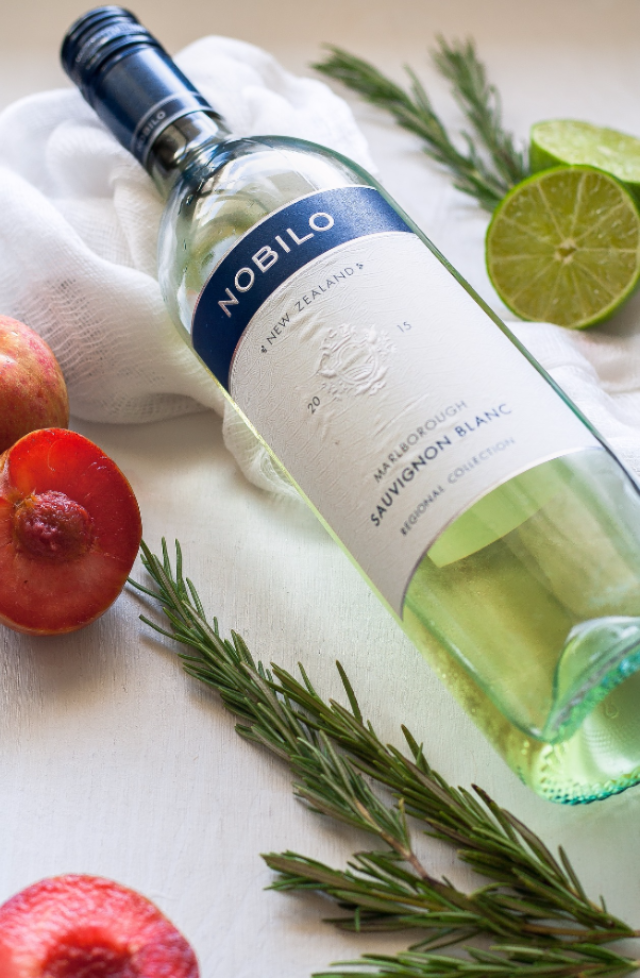
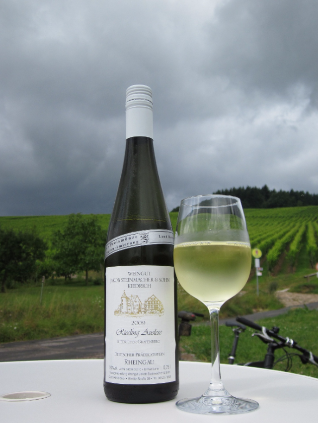

Pinot Gris
La Vita D'oro begins with delightful aromas of roasted pineapple, candied lemon rind and honeysuckle. A warm year, 2015 created a rich, fruit forward wine with ripe flavors of zesty orange, tangerine and Asian pear. The palate is complex with notes of honeydew, jasmine and a sliver of minerality.
Sauvignon Blanc
With a pale gold hue, the 2015 vintage opens on the nose with the fresh, light scents of melon and white peach. Delicate flavors, along with the wine's minerality, build toward a lingering finish, crisp and dry and calling you back for another refreshing sip.
Zinfandel Rose
A bouquet of flowers and red berries on the nose, the palate is lively with fresh strawberry flavors lifted with a kiss of zingy lemon and red plum flavors. The finish is clean and refreshing.